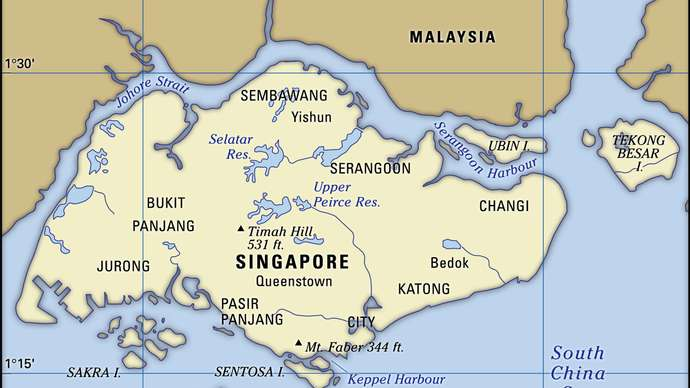

Singapore Island originally was inhabited by fishermen and pirates, and it served as an outpost for the Sumatran empire of Srīvijaya. In Javanese inscriptions and Chinese records dating to the end of the 14th century, the more-common name of the island is Tumasik, or Temasek, from the Javanese word tasek (“sea”).
 Rajendra Chola I, ruler of the southern Indian Chola kingdom, attacked the island in 1025, and there was another Chola raid in 1068. In 1275 the Javanese king Kertanagara probably attacked Temasek when he raided Pahang on the east coast of the peninsula. According to a Chinese traveler, Wang Dayuan, just before 1349 about 70 Tai (Siamese) war boats besieged Temasek for a month but had to withdraw. The Javanese epic poem Nāgarakṛtāgama (written 1365) includes Temasek among the conquests of the Javanese empire of Majapahit. At the end of the 14th century, Temasek fell into decay and was supplanted by Malacca (now Melaka). Yet in 1552 it was still a port of call from which St. Francis Xavier dispatched letters to Goa, and João de Barros described its busy shipping activity in his history Décadas da Ásia (1552–1615).
Rajendra Chola I, ruler of the southern Indian Chola kingdom, attacked the island in 1025, and there was another Chola raid in 1068. In 1275 the Javanese king Kertanagara probably attacked Temasek when he raided Pahang on the east coast of the peninsula. According to a Chinese traveler, Wang Dayuan, just before 1349 about 70 Tai (Siamese) war boats besieged Temasek for a month but had to withdraw. The Javanese epic poem Nāgarakṛtāgama (written 1365) includes Temasek among the conquests of the Javanese empire of Majapahit. At the end of the 14th century, Temasek fell into decay and was supplanted by Malacca (now Melaka). Yet in 1552 it was still a port of call from which St. Francis Xavier dispatched letters to Goa, and João de Barros described its busy shipping activity in his history Décadas da Ásia (1552–1615).
Singapore, city-state located at the southern tip of the Malay Peninsula, about 85 miles (137 kilometres) north of the Equator.It consists of the diamond-shaped Singapore Island and some 60 small islets;the main
 island occupies all but about 18 square miles of this combined area.The main island is separated from Peninsular Malaysia to the north by Johor Strait, a narrow channel crossed by a road and rail causeway that is more than half a mile long. The southern limits of the state run through Singapore Strait, where outliers of the Riau-Lingga Archipelago—which forms a part of Indonesia—extend to within 10 miles of the main island.Singapore is the largest port in Southeast Asia and one of the busiest in the world. It owes its growth and prosperity to its focal position at the southern extremity of the Malay Peninsula, where it dominates the Strait of Malacca, which connects the Indian Ocean to the South China Sea. Once a British colony and now a member of the Commonwealth, Singapore first joined the Federation of Malaysia on its formation in 1963 but seceded to become an independent state on August 9, 1965.
Tropical
Singapore is situated near the equator and has a typically tropical climate, with abundant rainfall, high and uniform temperatures,

and high humidity all year round. Many of its climate variables, such as temperature and relative humidity, do not show large month-to-month variation.
One thing you’ll notice when visiting Singapore is its multi-culturalism.
The mix of expats and locals creates for such a vibrant fusion of different cultures, food and experiences to be had in the city.